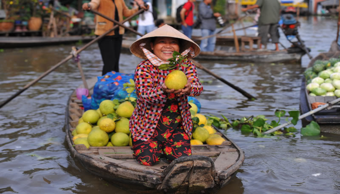
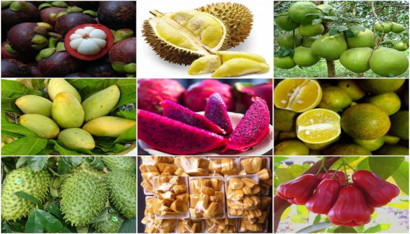

Giới Thiệu Chung
Cần Thơ là thành phố trực thuộc Trung ương, nằm ở vị trí trung tâm của vùng đồng bằng sông Cửu Long. Vốn được mệnh danh là Tây Đô – Thủ phủ của miền Tây Nam bộ từ hơn trăm năm trước, giờ đây Cần Thơ đã trở thành đô thị loại I trực thuộc Trung ương và là một trong 4 tỉnh thuộc vùng kinh tế trọng điểm của vùng đồng bằng sông Cửu Long và là vùng kinh tế trọng điểm thứ tư của Việt Nam.
Cần Thơ đang hướng tới mục tiêu trở thành thành phố đồng bằng cấp quốc gia, văn minh, hiện đại, xanh, sạch đẹp, là trung tâm công nghiệp, trung tâm thương mại – dịch vụ, trung tâm giáo dục đào tạo và khoa học công nghệ, trung tâm y tế và văn hóa của vùng.
Hình ảnh một phần thành phố Cần Thơ
Tổ chức hành chính: TP. Cần Thơ được chia làm 9 đơn vị hành chính, gồm 5 quận (Ninh Kiều, Bình Thủy, Cái Răng, Ô Môn, Thốt Nốt) và 4 huyện: Phong Điền, Cờ Đỏ, Thới Lai, Vĩnh Thạnh với tổng số thị trấn, xã, phường là 85, trong đó có 5 thị trấn, 44 phường và 36 xã (Tính thời điểm ban hành Nghị định số 12/NĐ-CP).
Dân số: 1.244.736 người (8/2021)
Người dân Cần Thơ
Người miền Tây nổi tiếng hiếu khách, hào hiệp, sẵn sàng cho người khách lữ hành lỡ bước tá túc ở nhà, họ đãi cơm rượu như người bà con xa mới về.

Hình ảnh thường ngày ở chợ nổi của người dân miền Tây
Những con người miền Tây luôn thân thiện, sống tình cảm và yêu đời, yêu người, hiền lành, chất phát. Đa phần bà con nơi đây sống bằng nghề nông là chủ yếu. Sau những vụ mùa bội thu, hay trước niềm vui mới, trước tiên họ bày tỏ bằng những nụ cười trên đôi môi, ánh lên niềm vui, hy vọng ở từng gương mặt khác nhau.
Du Lịch
Với hệ thống sông rạch chằng chịt, những vườn cây ăn trái, những chợ nổi tấp nập trên sông (chợ nổi Cái Răng, chợ nổi Phong Điền)... đại diện cho vùng sinh thái phù sa ngọt, một vùng sinh thái tiêu biểu của ĐBSCL, TP. Cần Thơ có nhiều địa điểm có tiềm năng phát triển du lịch sinh thái như: cồn Cái Khế, cồn Khương, cồn Ấu, cồn Sơn, cù lao Tân Lộc, vườn cò Bằng Lăng, làng hoa Thới Nhựt…
Hình ảnh du khách tham quan rừng tràm trên thuyền
Du lịch nhân văn: Trên địa bàn TP. Cần Thơ có nhiều di tích lịch sử và các công trình văn hóa nổi tiếng như tượng đài Bác Hồ, bảo tàng Thành phố, bảo tàng Quân khu 9, đình Bình Thủy, bến Ninh Kiều, chùa Nam Nhã Đường...
Đặc Sản
"Cần Thơ gạo trắng nước trong, ai đi đến đó lòng không muốn về". Thật vậy, Cần Thơ không chỉ níu chân du khách bằng cảnh quan sông nước yên bình mà còn bằng các món ăn mang đậm vị riêng nơi đây.
Cần Thơ với những vườn trái cây nức tiếng ở Phong Điền, Bình Thủy, Thốt Nốt... cũng trĩu cành những loại đặc sản: nhãn, chôm chôm, dâu, sầu riêng, măng cụt..

Hình ảnh một số đặc sản và trái cây miền Tây
Khi đặt chân tới Cần Thơ du khách không chỉ thưởng thức các loại đặt sản và trái cây được bày bán, mà du khác còn được trực tiếp tham quan các nơi sản xuất cấc loại đặc sản và thưởng thức các loại trái cây thơm ngon lại miệt vườn.